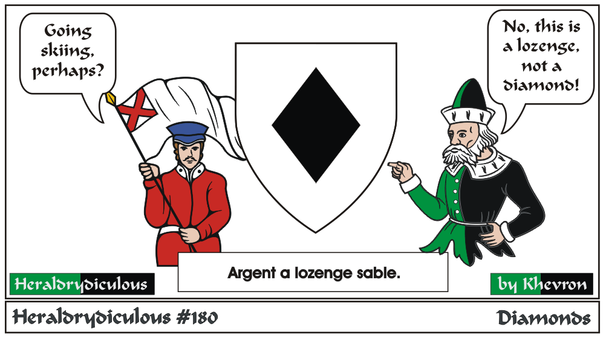
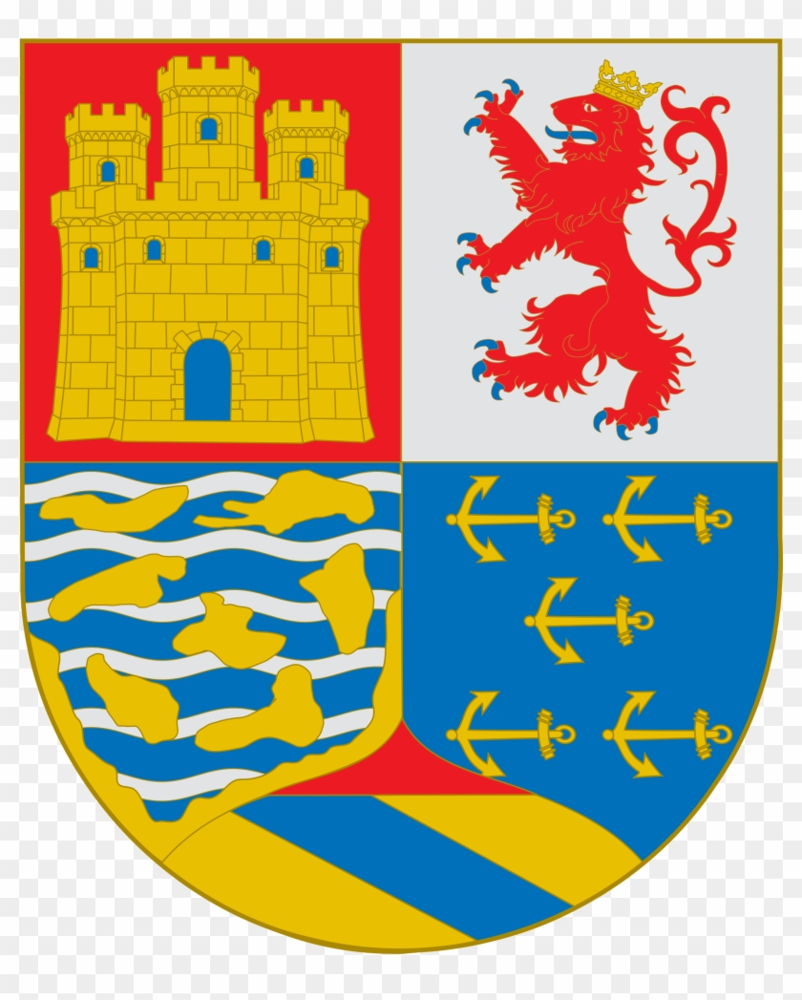

Well, diamonds come in several shapes, but due to that fact, gemstones don't appear (at least realistically) in period heraldry.
Lozenges don't look like Vicks either.
"The arms of C. Columbus is quite unusual (I hesitate to try to blazon it) and has an interesting, if someone debated, history:

The earliest graphic representation of Columbus' arms is found in his Book of Privileges and shows the significant modifications Columbus ordered by his own authority. In addition to the royal charges that were authorized in the top quarters, Columbus adopted the royal colors as well, added a continent among the islands in the third quarter, and for the fourth quarter borrowed five anchors in fess from the blazon of the Admiral of Castille. Columbus' bold usurpation of the royal arms, as well as his choice of additional symbols, help to define his personality and his sense of the significance of his service to the Spanish monarchs."
e-mail: